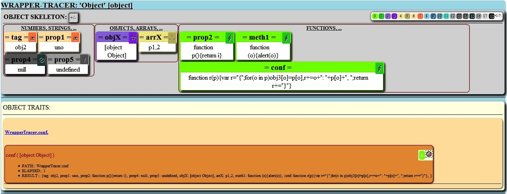

It is a Javascript class which creates wrappers objects for allow the tracing of executed methods.
It is responsible for analyzing any JS object showing its skeleton to get a graphic idea of how is your internal map of methods and properties. It also captures their methods, then records an event to tracing your execution cycle.WrapperTracer v1.0.0
copyright @ 2015 - Juan José Guerra Haba <dinertron@gmail.com>License: Free. GPL.v3
WrapperTracer Tutorial
Introduction:
This class analyzes the internal structure of any object JS showing a Graph Map of your skeleton, for, at a glance, studying their internal anatomy.
Visually represents all properties grouped by type. In this way we can see quickly how many properties booleans, type string, number, etc ... has, like the objects and arrays it contains. We can also visualize their methods or functions and differentiate if they own properties (OWN) or inheritable (through its prototype).
To represent any property they must be assigned (albeit a undefined), otherwise they will not be represented.
Once the object (wrappeado) is captured in its wrapper, you can run your methods, leaving a recursive record of its execution path, with some interesting data such as time spent in each method or route has followed.
It could be very useful as a tool for developers and programmers code 'javascript', showing at a glance the internal structure of any 'javascript' object, even a superobject as 'window'.
With a little imagination could be used as a tool for comparison of similar objects, or different versions.
Loading and Using the Script:
Of course the first step will begin by loading the script in the Head page, for example:
<script type="text/javascript" src="WrapperTracer.js"> </script>
Once loaded, the script creates a global class WrapperTracer with which we can create objects <<wrappeadores>>. Your builder supports up to three parameters:
- Javascript Object: Any object, function or javascript library.
- Container Element: A string which represent the 'id' attribute of any element from DOM, or the item itself HTMLElement.
- Callback Function [OPTIONAL]: A function as a callback which will be injected into all object methods.
We can write code (in a <script> tag) to create the builder and capture any object, WrapperTracer is responsible for building the graphical interface showing informationn:
//the 'id' property corresponds to the id of a container element where to locate all UI
//Creates the 'wrapper':
var wrapper = new WrapperTracer( window, "idContenedor" );
//now, creates the 'wrapped' object:
var wrapped = wrapper.getWrapped( );
...
Notes:
The class constructor creates all UI
The getWrapped() method would only be useful if we need to trace the methods executed.
Although there has been an effort to make the library is cross-browser, a difference can be observed depending on the browser used, especially "IE".
GUI:
The graphical interface constructs itself and is embedded in the element with the 'id' passed as a parameter. All the code you need (javascript, css, html) is defined in the script itself 'WrapperTracer.js', it is responsible for displaying two distinct areas, the skeleton and Traces:
The skeleton area can be hidden with the button
All properties are grouped by type and displayed with signs and by a code of pairs of colors to differentiate, which are own (OWN) or legacy (inherited) ; with "inherited" I mean <<derived from its prototype>>.
In the Features or Trace (TRAITS) areas, are represented the executed methods in nested blocks showing some information as parameters are shown, time used to run the method (ELAPSED) or the result (RESULT), if it returns something.
COLOFON:
WrapperTracer It has been designed as a tool for developers and programmers of 'javascript' code, it may be useful to understand the internal structure of any 'javascript' object, even a superobject as 'window', could also be used to compare different versions of scripts and their structural differences, performance checkings or measures using the different execution times of each method.
I encourage all users (programmers/developers) to use this script that can sure be helpful. To start you can experiment with the proposed examples to get familiar with it.